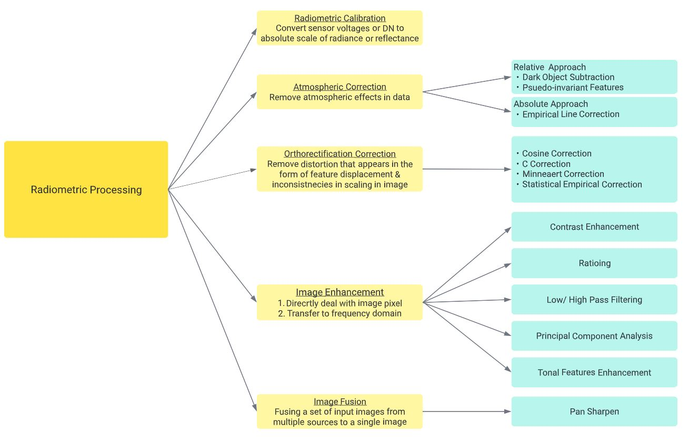
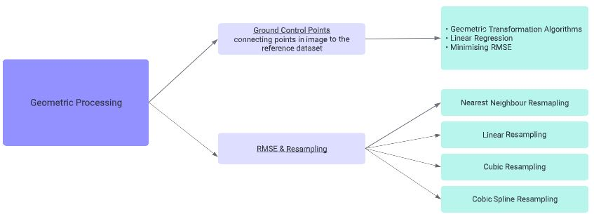
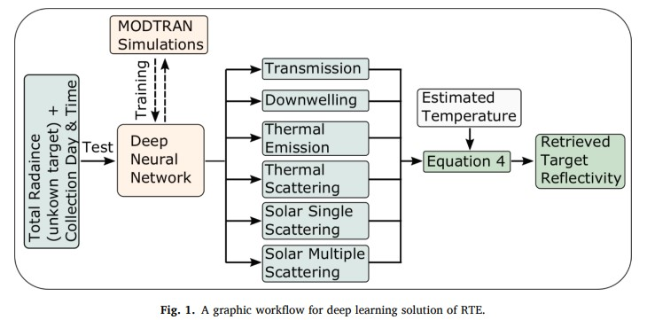

3 Correction of Remote Sensing Data
3.1 Summary
In order to correct possible errors in data acquisition and enhance image features, the geometric and radiometric properties of remote sensing images are handled by data processing system. Summarised by Liang and Wang (2020), the pre-processing tasks are essential before extracting environmental information from data, including radiometric processing and geometric processing.
Radiometric Processing
In radiometric processing, corrections on data can be applied by radiometric calibration, atmospheric correction and orthorectification correction, while visualisation in image can be optimised by image enhancement and image fusion. Referencing to content in this week and Liang and Wang (2020), approaches in radiometric processing are described below:

Flow chart of radiometric processing Source: week 3 content and Within image enhancement, various approaches in each category can be performed to enhance spectral features of image. User can adjust how the satellite imagery is presented according to the study design and visual observation. For point operations, contrast enhancement is widely applied to optimise the image contrast and brightness or highlight information in specific DN ranges. To select the appropriate interactive contrast enhancement function, image quality can be assessed by visual observation and image data distribution in histogram through observing the effect of modification (“Point Operations (Contrast Enhancement)” 2016).
Another enhancement approach is applying filtering with neighbourhood processing. According to “Filtering and Neighbourhood Processing” (2016), possible operations are:
Low pass filters (smoothing): reduce noise in image by removing high frequency information which also degrades image detail. Authors also suggested using edge-preserving filters to minimise the degradation of resolution if needed.
High pass filters (edge enhancement): remove low frequency information and enhance features with high frequency , where filtering can be combined with contrast enhancement in point operation to adjust the contrast locally in a neighbourhood.
For correlated multi-variable datasets, principal component analysis is an effective technique, as it can concentrate the maximum information in multi-spectral data into a few uncorrelated principal components. PCA is able to reduce the redundancy in information between bands in multi-spectral data, which redundancy is caused by common image features in topography (“Principal Component Analysis” 2016). Thus, the operation is able to reduce the size of dataset and enable effective image RGB display when using multi-spctral remote sensing image.
Geometric Processing
Image acquired by sensor contains discrepancy with the true spatial properties of landscape, which the distortion can be caused by factors like changes in altitude, attitude and velocity, Earth rotation and curvature, surface relief displacement and perspective projections during image collection (Liang and Wang 2020). The figure below shows how geometric processing can be applied to original imagery for reducing the distortion by using ground control points and estimating RMSE.

Flow chart of geometric processing “Image Geometric Operations” (2016) pointed out that GCP selections is of vital importance for the accuracy and automation of image warping
co-registration, in which manual and semi-automatic GCP can be greatly affected by human error, causing automatic image co-registration to be more widely applied.
3.2 Applications
3.2.1 Radiometric Processing
Other than the mentioned general operations, image enhancement can also apply specifically for certain weather condition. Kaplan (2018) proposed a hazy image model that determines the global airlight and transmission map by using mean and standard deviation of the original image. The proposed model is based on the existing hazy image model, which global airlight and transmission map are variables to be determined for the contrast restoration of weather degraded images. The author compared with former methods, like hybrid dark channel prior, and found out that the proposed enhancement method provides a better enhancement and edge preserving capability among all.This study shows that some of the existing methods may contain limitation that not applicable for specific enhancement purpose, such as the oversatruration or undersaturation problem of histogram equalisation in image enhancement, which can be revised and improved to increase the accuracy of adjustment.
Recently, researchers are also proposing methods to increase the efficiency in satellite image pre-processing by using machine learning techniques. Acknowledged the extensive computation and deficiency in real time application, Sun et al. (2021) proposed using time-dependent deep neural network for automatic atmospheric correction and target detection. The study is based on the advantage of remote sensing (frequent, reliable and large area data) and aimed at producing a network that study all atmospheric characteristics that affect the observed total radiance. Thus, other than total radiance map, the network also requires inputs about collection day of the year and time of the day, which considers the seasonal and diurnal variability of atmosphere and their impact on incoming solar radiation and atmospheric conditions (Sun et al. 2021). Although the application of this network is limited due to the intensive time and cost in collecting ground truth measurements, the research presented how image processing in remote sensing can be improved with state-of-art technologies by showing its potential in integrating with deep learning based approach in atmospheric correction tasks.

3.2.2 Geometric Processing
With reference to previous studies on the influence of geometric correction on the accuracy of atmospheric correction algorithm at dark pixels and water-leaving radiance, Li and Xia (2021) analysed the influence for three surface waterbodies of different water quality class through calculating errors with ground object spectrometer measurement and analyse water reflectance by geometric correction.The result revealed that geometric correction exerts a certain degree of influence on reflectance value of atmospheric corrected image, but has small influence on overall trend. This study demonstrated how operation of geometric processing can has possible influence on the accuracy of result data and should be performed carefully when establishing GCPs. Apart from adopting automatic GCP selection, user should ensure the RMSE is minimised and under the threshold to ensure the overall accuracy. However, as the research design only involved a small sample size and collection of in-situ data may contain systematic error, conclusion retrieved from this study may need further study and verification.
3.3 Reflection
This week generally covers the methods and operations in pre-processing of remote sensing imagery data. Image enhancement is one of the interesting parts in this week content as there is many flexibility in selecting the enhancement approach. With many methods developed in image enhancement, methods can be selected based on the project scale, objective and requirement of following analysis, and apply cooperatively with other enhancement operations. For example, for study that investigate topographic features, high pass filter can be applied with contrast enhancement to optimise the visualisation in local pixels. In addition, PCA is an effective technique that can be explore more on, especially for project with large dataset that has more redundancy in multi-spectral imageries. For future studies, automation in correction is possible aspect to develop, such as the automatic atmospheric correction proposed by Sun et al. (2021). Although “analysis ready data” is available that benefit studies like time-series analysis and reduce cost for image pre-processing in general, future study on automatic correction is still vital for platform that doesn’t provide ARD.